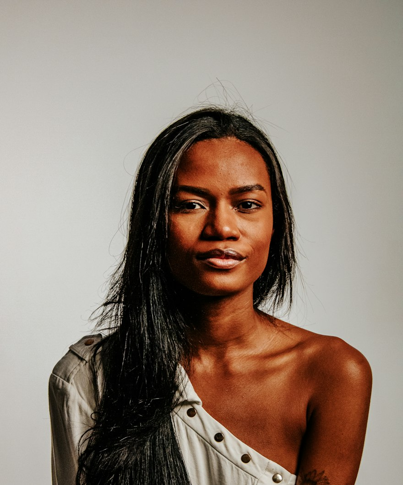
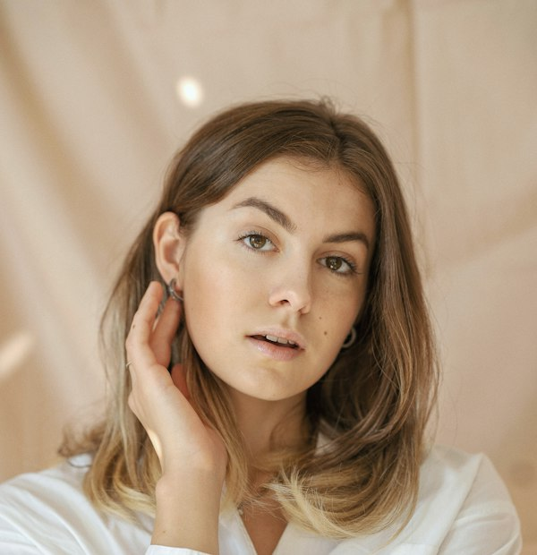
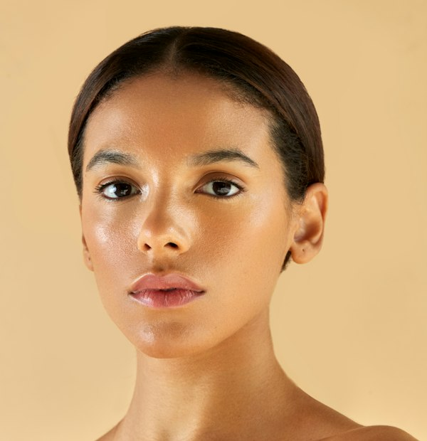
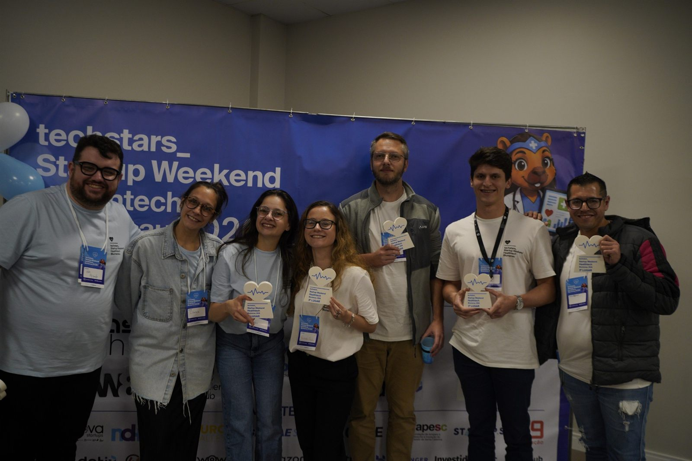
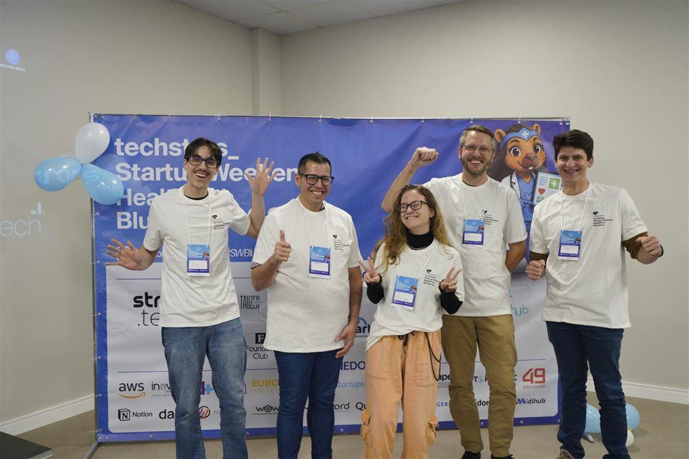
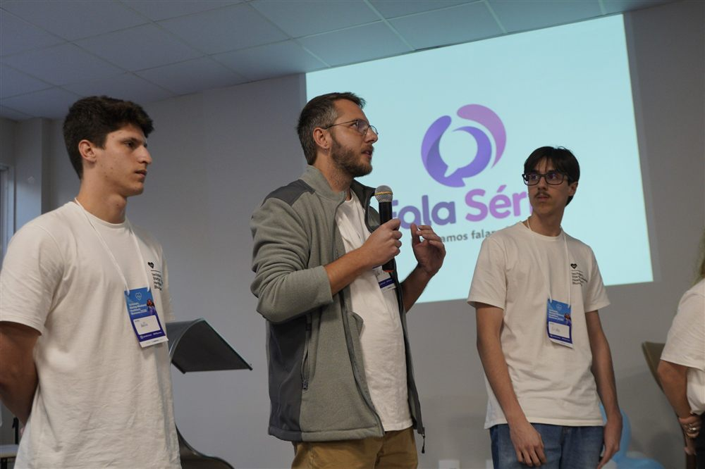

Essencial
R$ 19,90 /mês
- 1 atendimento por mês
- Acesso de madrugada
- Relatório para levar ao médico
O Fala Sério nasceu de nove entrevistas com mulheres de Blumenau. A proposta: uma enfermeira disponível pelo WhatsApp, a qualquer hora, para dizer se o que ela sente é normal ou se é hora de procurar um ginecologista.

As dúvidas que mais apareceram nas entrevistas.


Não é. E foi daí que o projeto partiu.
Sem aplicativo e sem cadastro — a conversa aconteceria no WhatsApp que ela já usa.
Perguntas simples sobre dor, fluxo, humor e o que já toma. Por texto ou áudio, no tempo dela.
Diz o que é esperado, o que ajuda agora e o que merece atenção. Se for caso de médico, fala com todas as letras.
Encaminhamento a um ginecologista parceiro em Blumenau, com um relatório do que ela contou — sem começar do zero na consulta.
A proposta previa uma enfermeira de sobreaviso — para ela não precisar esperar amanhecer sozinha só para saber se aquilo era normal ou se era hora de ir ao pronto-socorro.
“Cheguei a ficar caída até conseguir levantar, sem ninguém pra me socorrer. É complicado quando a gente pensa nisso, porque tem mulheres sozinhas e sem ajuda.”
Relato da pesquisa em Blumenau
Havendo qualquer sinal de alerta, o encaminhamento ao pronto-atendimento seria imediato. A enfermeira nunca seria motivo para deixar de ir.
Assinatura mensal, com a enfermeira remunerada por atendimento — custo variável desde o primeiro dia.
R$ 19,90 /mês
R$ 49,90 /mês
R$ 99,90 /mês
O plano Prioridade incluiria a prioridade no agendamento, nunca a consulta — que seria paga diretamente ao ginecologista. O Fala Sério não é plano de saúde. A remuneração da enfermeira seria por atendimento, e a relação com o médico seria de troca, nunca de comissão por paciente encaminhado.
Nove entrevistas com mulheres e parceiros em Blumenau. Estes são alguns trechos.
“Eu morria de dor, fadiga, impossível. Era totalmente incapacitante.”
“Já precisei de atestado, porque eu não conseguia me concentrar de dor, mesmo tomando remédio.”
“Eu já procurei ginecologista, mas é aparentemente normal.”
“As pessoas acham que isso é uma manha, uma frescura.”
Falas reproduzidas sem identificação. Fora as do evento, as fotos desta página são ilustrativas e não retratam as pessoas entrevistadas.
Um fim de semana para transformar a pesquisa em modelo de negócio, validar os números e defender a ideia diante da banca.



O Fala Sério não está em operação. É um projeto de pesquisa e modelagem, construído para mostrar que existe um problema real de acesso à informação sobre saúde menstrual em Blumenau — e que ele tem solução viável.